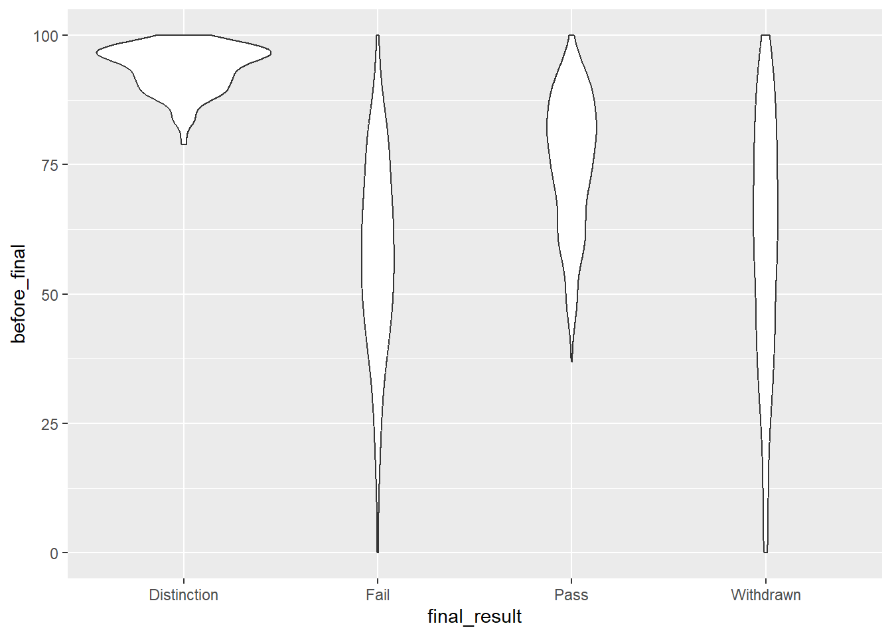
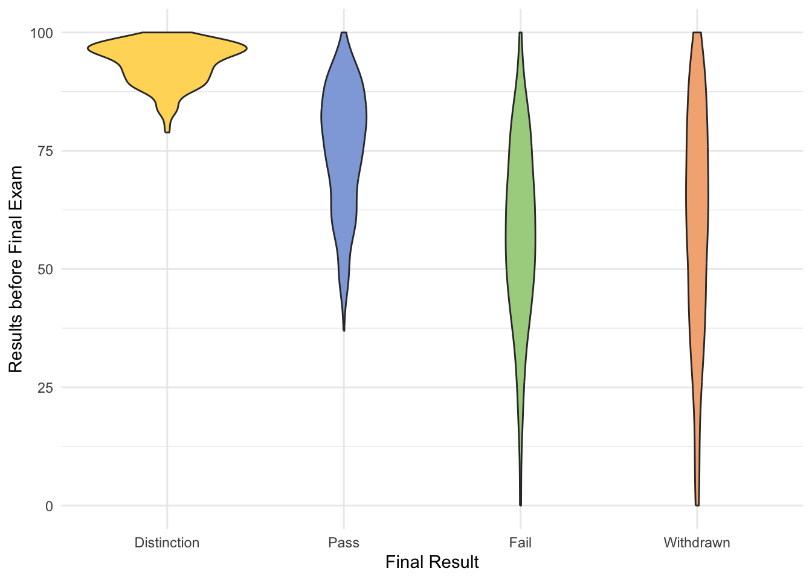

library(tidyverse)
library(rstatix)
palette1 <- c("#FFD966", "#8FAADC", "#A9D18E", "#F4B183")Analysebeispiel - Virtual Learning Environment Data
In der heutigen Sitzung wollen wir beispielhaft eine komplette Analyse mit euch durchführen. Das soll euch auch darauf vorbereiten, wie ihr bei der Erstellung des Berichts vorgehen könnt.
Wir haben heute grob drei Teile:
Daten kennenlernen und Fragestellung entwickeln
Datensatz wranglen und vorbereiten
Stichprobe & Daten beschreiben und analysieren
Wir verwenden Daten, die unter dem Namen “Open University Learning Analytics Dataset” laufen. Dort sind insgesamt sieben Datensätze enthalten, die verschiedene Informationen zur Studierenden und denen von ihnen belegten Kursen und durchgeführten Prüfungen enthalten. Mehr wollen wir noch nicht verraten, da ihr euch auch selbst der Herauforderung stellen sollt, sich in einen zunächst unbekannten Datensatz einzuarbeiten.
Exkurs zu kaggle.com
Kaggle ist eine Website für alle, die an Data Science interessiert sind. Dort gibt es zahlreiche echte Datensätze zu diversen Themen, die man herunterladen und bearbeiten kann. Die eigene Auswertung kann man auch wieder hochladen und mit anderen Leuten diskutieren. Es gibt Wettbewerbe, bei denen Daten ausgewertet werden sollen, aber auch Kurse für Anfänger und Fortgeschrittene.
Alles in allem also eine gute Plattform, um die eigenen Skills zu testen und zu erweitern.
Den Datensatz für die heutige Stunde haben wir auch dort gefunden, und auch werdet dort beginnen, wenn ihr euch mit den Daten vertraut macht.
Teil 1: Daten kennenlernen
Die Daten haben wir euch im Moodlekurs hochgeladen, ihr könnt sie aber auch unter https://www.kaggle.com/datasets/rocki37/open-university-learning-analytics-dataset?select=assessments.csv finden. Auf der Seite finden sich auch immer zusätzliche nützliche Informationen über die Herkunft und den Kontext der Daten. Außerdem sind sie für den Anfang recht übersichtlich aufbereitet, sodass man sich ohne viel Aufwand einen ersten Überblick verschaffen kann.
Weitere Informationen findet ihr außerdem unter diesem Link:
https://analyse.kmi.open.ac.uk/open_dataset#description
Dort werden die Variablen etwas genauer beschrieben und es gibt eine nette Grafik zur Verknüpfung der Variablen.
Eure erste Aufgabe ist jetzt, euch einen Überblick über die Daten zu verschaffen:
Was wurde hier eigentlich alles erfasst?
Was steckt hinter welchem Datensatz?
Was ist in jedem Datensatz die “Schlüssel”-Variable (die zum einen im Fokus steht, aber zum anderen auch als Identifikationsvariable verwendet werden kann)?
Wie lassen sich die Datensätze miteinander verknüpfen?
Welche Fragestellungen könnte man mit dem Datensatz bearbeiten?
Welche Variable(n) bieten sich als abhängige Variablen an?
Schaut euch also auf den Websites, in den Datensätzen und die Variablen an und überlegt Antworten auf die Fragen. Wir besprechen sie dann gleich gemeinsam.
Nach Bearbeitung:
Datensätze
In
studentRegistrationfinden wir, welche/r Studierende sich wann in welchem Kurs eingeschrieben hat.- Warum gibt es immer
moduleundpresentation? Was steckt dahinter?
- Warum gibt es immer
In
studentAssessmentfinden wir die Bewertung der Studierenden in verschiedenen Prüfungen, wann die Prüfung abgelegt wurde, und ob sie von einem anderen Kurs übertragen wurdeIn
studentVlefinden wir die Interaktionen der Studierenden mit dem Virtual Learning Environment. Mit welchem Element haben sie interagiert (id_site), und an welchem Tag (date) mit wie vielen Klicks (sum_click)- In welchem Format befindet sich
date? Welche Information enthält es? Welche nicht?
- In welchem Format befindet sich
In
assessmentswerden die einzelnen Prüfungen einem Modul und Semester zugeordnet. Außerdem wird nach Art der Prüfung unterschieden und der Zeitpunkt der Prüfung angegeben.Weightgibt an, ob es sich um eine alleinstehende Prüfung handelt oder sie mit anderen zusammen verrechnet wird. Der type “Final Exam” ist dabei alleinstehend, die anderen Types addieren sich zu 100%In
courseswerden die Module und Semester einander zugeordnet- Warum gibt es dafür einen extra Datensatz, wenn diese Information auch in vielen anderen Datensätzen miteinander kombiniert wird?
In
vlestehen genauere Information über die Materialien aus dem VLE (id_site), unter anderem um was für eine Aktivität sie sich handelt und in welchem zeitlichen Abschnitt die Interaktion damit vorgesehen wäre.In
studentInfosind vor allem demographische Daten pro Student enthalten, aber auch dasfinal_resultdes Moduls- Die Variablen sind relativ selbsterklärend - hat jemand geschaut, wobei es sich um
imd_bandhandelt?
- Die Variablen sind relativ selbsterklärend - hat jemand geschaut, wobei es sich um
Verknüpfungen der Datensätze

Über
id_studentlassen sich die demographischen Daten der Studierenden mit den Anmeldungen, VLE-Interaktionen und Prüfungsleistungen verknüpfenÜber
id_assessmentlassen sich die Leistungen mit den Eigenschaften der Prüfungen verknüpfenÜber
id_sitelassen sich die Interaktionen mit den Elementen mit den Eigenschaften der Elemente abgleichenSind
code_moduleundcode_presentationsinnvolle Verknüpfungsvariablen?
Welche (sinnvollen) Fragestellungen könnte man bearbeiten?
Zusammenhang der finalen Note mit…
demographischen Variablen wie Ausbildung, Herkunft, soziookonomischer Status
den verschiedenen Zwischenprüfungen
der Beschäftigung mit dem VLE (wie lässt sich das sinnvoll operationalisieren?)
Modul/Semester
vorherigen Versuchen
Zusammenhang der Interaktion mit dem Material mit Art des Materials
Zusammenhang des Materials mit Bestehensrate eines Moduls
Zusammenhang des investierten Aufwands (wie kann man das operationalisieren?) mit der Gewichtung der Prüfung
Zusammenhang von Note und Typ des Assessments
Verlauf von Interaktionen mit dem Material über die Zeit des Kurses
Verlauf der Benotungen über die Zeit des Kurses
Unsere Fragestellungen heute:
A) Inwiefern hängen die Zwischenprüfungen, die im Kurs vor dem “final exam” durchgeführt wurden, mit dem Bestehen des Kurses zusammen?
B) Wie verhalten sich die Bewertungen der Zwischenprüfungen über den Verlauf des Kurses für die verschiedenen Kurse?
Damit es für uns heute im Seminar zeitlich machbar ist, schränken wir die Fragestellungen für jeweils einen Kurs bzw. ein Semester ein:
A) code_module == "CCC" & code_presentation == "2014J"
B) code_presentation = "2013J"
Teil 2: Data Wrangling
Wir kennen nun die Datensätze und die Variablen, mit denen wir arbeiten möchten. Bevor wir uns richtig mit der Fragestellung beschäftigen können, müssen wir die relevanten Variablen erstellen und uns außerdem einen neuen Datensatz zusammenbasteln, in dem alle relevanten Variablen enthalten sind.
Dabei sollten wir nicht blind loslegen, sondern immer die Datenstruktur und mögliche Auffälligkeiten im Blick behalten. Schließlich kennen wir die Daten noch nicht so gut, und einige Ideen zur Variablenerstellung könnten sich in der Praxis als wenig sinnvoll erweisen.
Konkrete Aufgaben:
Daten in R laden, Packages aktivieren
potentielle neue Variablen erstellen, dabei Operationalisierung auf Tauglichkeit überprüfen und evtl. ändern
finalen Datenssatz erstellen, mit dem wir Plots & Analysen rechnen könnten
Dann gehen wir fließend zu Teil 3 über: Plot und/oder Analysen erstellen und auswerten
Nach Bearbeitung:
Packages und beliebige weitere Variablen festlegen, z.B. Farbpaletten.
Daten einlesen - vielleicht brauchen wir gar nicht alle Datensätze, aber ich lade sie lieber alle mal rein. Entfernen geht später immer noch
# Course Infos
assess <- read.csv("assets/datasets/kaggle_learning_analytics/assessments.csv")
courses <- read.csv("assets/datasets/kaggle_learning_analytics/courses.csv")
# Student Infos
student.assess <- read.csv("assets/datasets/kaggle_learning_analytics/studentAssessment.csv")
student.info <- read.csv("assets/datasets/kaggle_learning_analytics/studentInfo.csv")
student.regi <- read.csv("assets/datasets/kaggle_learning_analytics/studentRegistration.csv")
# VLE Stuff
student.vle <- read.csv("assets/datasets/kaggle_learning_analytics/studentVle.csv")
vle <- read.csv("assets/datasets/kaggle_learning_analytics/vle.csv")
# Theoretisch wäre hier apply() eine Option gewesen, ich wollte aber die klare Kontrolle darüber, welchem Datensatz ich hier welchem Namen zugewiesen habeNotendurchschnitt der Zwischenprüfungen 2 (nur für ein Modul)
Um uns die Analyse etwas einfacher zu gestalten, schauen wir uns nur die Ergebnisse von einem Modul aus einem Semester an. So müssen wir nicht berücksichtigen, ob Studierenden mehrfach in den Daten auftauchen durch mehrfache Belegung uvm.
# Welcher Kurs hat am meisten Anmeldungen (-> höheres n)?
student.regi %>%
filter(!is.na(date_registration)) %>%
group_by(code_module, code_presentation) %>%
summarize(n = n()) %>%
arrange(desc(n))`summarise()` has grouped output by 'code_module'. You can override using the
`.groups` argument.# A tibble: 22 × 3
# Groups: code_module [7]
code_module code_presentation n
<chr> <chr> <int>
1 CCC 2014J 2495
2 FFF 2014J 2363
3 BBB 2014J 2291
4 FFF 2013J 2282
5 BBB 2013J 2235
6 DDD 2013J 1933
7 CCC 2014B 1931
8 DDD 2014J 1800
9 BBB 2013B 1766
10 FFF 2013B 1611
# ℹ 12 more rows# code_module == CCC
# code_presentation = 2014J
# dazu gehörige assignments filtern
assess.mod <- assess %>%
filter(code_module == "CCC" & code_presentation == "2014J") %>%
select(id_assessment)
# Natürlich könnten wir das auch als dataframe abspeichern, aber wir werden ja nicht nur dieses Dataframe, sondern auch die anderen entsprechend gefiltert benötigen, daher ist es auch sinnvoll, einen Filtervektor zu definierenAnhand von assessment_type können wir sehen, welche assessments (nennen wir hier auch Prüfungen) ein “Final Exam” waren (Exam) und welche nicht (TMA, CMA). Da es uns ja nur um die Zwischenprüfungen geht, interessieren uns nicht Exam-Zeilen also nicht. Wir können uns jetzt also einen Vektor bauen mit den id_assessment-Werten, die wir weiterverarbeiten wollen:
zwischenpruefungen <- assess %>%
filter(id_assessment %in% assess.mod$id_assessment) %>%
filter(assessment_type != "Exam") %>%
select(id_assessment)Diesen Vektor können wir benutzen, um in dem Datensatz mit den Noten zu filtern (student.assess):
head(student.assess) id_assessment id_student date_submitted is_banked score
1 1752 11391 18 0 78
2 1752 28400 22 0 70
3 1752 31604 17 0 72
4 1752 32885 26 0 69
5 1752 38053 19 0 79
6 1752 45462 20 0 70student.zwischen <- student.assess %>%
filter(id_assessment %in% zwischenpruefungen$id_assessment)
# Hier speichere ich den Datensatz separat ab, da ich konkret mit ihm weiterrechnen willDer gefilterte Datensatz enthält student_id und score - da sind wir ja schon mal auf einem guten Weg.
Die nächste Idee ist jetzt, über group_by und summarize einen Mittelwert pro StudentIn zu erstellen.
Aber vorher gibt es noch ein Sache zu berücksichtigen: Aus assess wissen wir, dass nicht alle Prüfungen gleich gewichtet werden - das sollten wir auch berücksichtigen beim Zusammenfassen der Ergebnisse!
Also müssen wir die Gewichtung aus dem einen Datensatz mit den Informationen aus dem anderen Datensatz zusammenführen.
# Die Gewichtung ist leider nur in "assess" enthalten - aber durch id_assessment haben wir ja einen key zum joinen
student.zwischen <- student.zwischen %>%
left_join(assess, by = "id_assessment")
# Die anderen Spalten aus assess sind auch dazugekommen, aber das schadet ja erst mal nicht. Lässt sich später immer noch selecten, wenn es zu nervig werden würde.Jetzt können wir einen gewichteten Mittelwert der Zwischenprüfungen pro StudentIn berechnen.
student.zwischen.w <- student.zwischen %>%
group_by(id_student) %>%
summarize(before_final = weighted.mean(score, weight))
# Was im Hintergrund passiert beispielhaft an einem Studenten:
student.zwischen %>%
filter(id_student == 23698) %>%
select(score, weight) score weight
1 94 9
2 60 22
3 69 22
4 67 22
5 78 2
6 93 7
7 73 8
8 56 8sum(c(9,22,22,22,2,7,8,8)) # = 100[1] 10094*0.09+60*0.22+69*0.22+67*0.22+78*0.02+93*0.07+73*0.08+56*0.08 # = 69.97[1] 69.97Jetzt müssen wir nur noch aus student.info die finalen Scores ergänzen, um unsere Analyse rechnen zu können
# Tatsächlich mal ein Fall für right_join, weil wir so student.info im gleichen Schritt noch aufbereiten können
zwischen.final <- student.info %>%
filter(code_module == "CCC" & code_presentation == "2014J") %>%
# hier verwenden wir wieder den Filter vom Anfang, da es id_assessment nicht als Variable gibt.
right_join(student.zwischen.w, by= "id_student")Teil 3: Analyse
Und nun zum letzten Schritt, der Analyse bzw. dem Plot.
# Basic Plot
zwischen.final %>%
ggplot()+
geom_violin(aes(x=final_result, y=before_final))Warning: Removed 6 rows containing non-finite values (`stat_ydensity()`).
# Verschönerter Plot
zwischen.final %>%
mutate(final_result = fct_relevel(final_result, "Distinction", "Pass", "Fail", "Withdrawn")) %>%
ggplot()+
geom_violin(aes(x=final_result, y=before_final, fill = final_result))+
theme_minimal()+
xlab("Final Result")+
ylab("Results before Final Exam")+
scale_fill_manual(values=palette1)+
theme(legend.position = "none")Warning: Removed 6 rows containing non-finite values (`stat_ydensity()`).
# ANOVA
zwischen.final %>%
anova_test(before_final ~ final_result)Warning: NA detected in rows: 449,547,661,688,1011,1954.
Removing this rows before the analysis.ANOVA Table (type II tests)
Effect DFn DFd F p p<.05 ges
1 final_result 3 1988 337.307 4.95e-177 * 0.337# Fost Hoc-Tests
zwischen.final %>%
tukey_hsd(before_final ~ final_result)# A tibble: 6 × 9
term group1 group2 null.value estimate conf.low conf.high p.adj
* <chr> <chr> <chr> <dbl> <dbl> <dbl> <dbl> <dbl>
1 final_result Distincti… Fail 0 -36.0 -39.6 -32.5 4.33e-11
2 final_result Distincti… Pass 0 -18.3 -21.4 -15.2 4.33e-11
3 final_result Distincti… Withd… 0 -34.3 -37.5 -31.1 4.33e-11
4 final_result Fail Pass 0 17.8 14.8 20.7 4.33e-11
5 final_result Fail Withd… 0 1.75 -1.26 4.75 4.42e- 1
6 final_result Pass Withd… 0 -16.0 -18.5 -13.5 4.33e-11
# ℹ 1 more variable: p.adj.signif <chr>Auswertung: Die Studierenden, die am Ende das Modul mit Auszeichnung (“Distinction”) abschließen, zeigen schon bei den Zwischenprüfungen signifikant bessere Ergebnisse als die Studierenden, die ohne Auszeichnung oder gar nicht abschließen. Die Studierenden, die ohne Auszeichnung bestehen, haben trotzdem bereits vorher signifikant besserer Zwischenprüfungen im Vergleich zu den nicht-Bestehenden. Zwischen denen, die final nicht bestehen und denen, die sich von der Prüfung wieder abmelden, gibt es keinen Unterschied.
- Plot verschönern: Palette